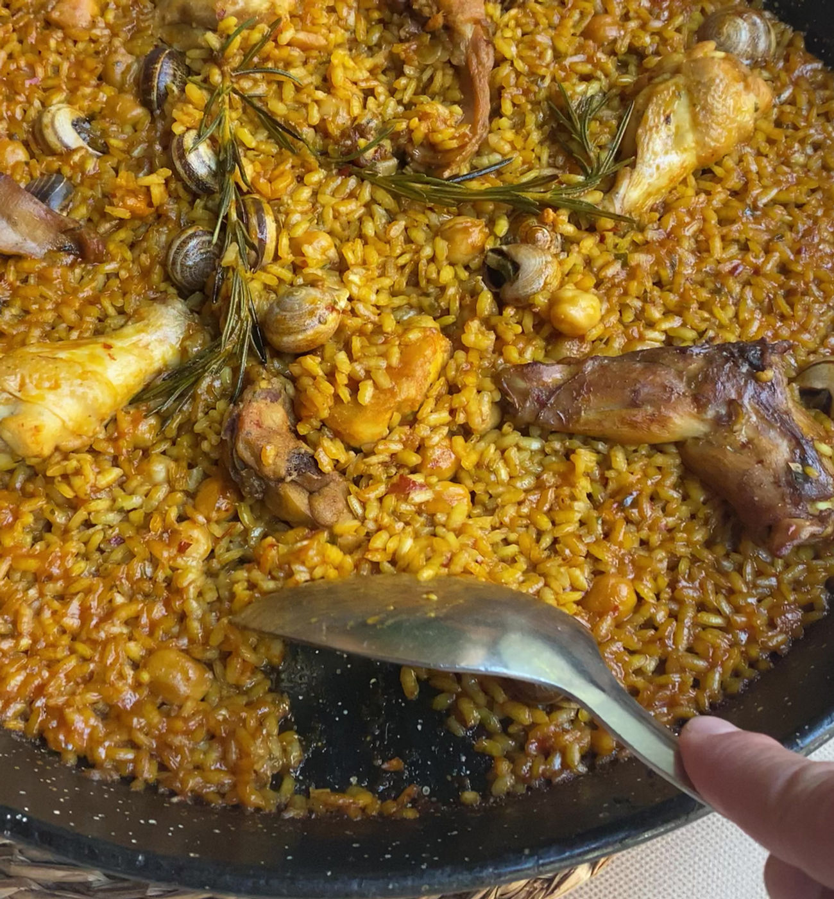
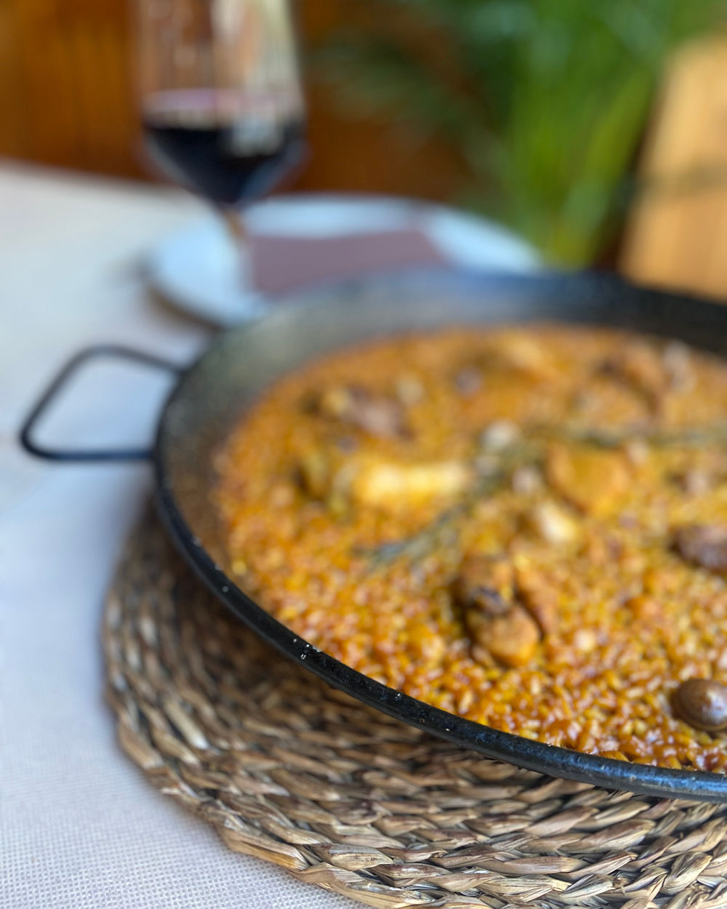
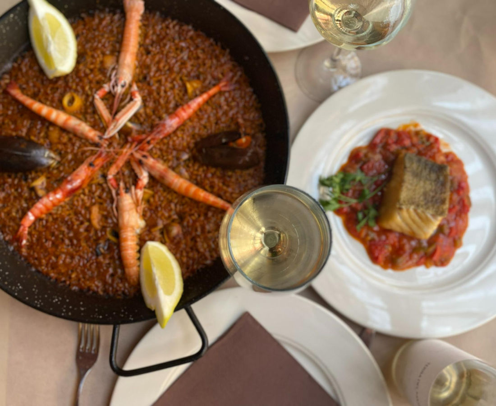

El alma de La Paella
Nuestra esencia
Platos tradicionales, ambiente familiar y la hospitalidad del mediterráneo.

“Atención esmerada y oportuna, rica la comida, el lugar estaba repleto, eso dice mucho. La gente se veía feliz, volvería nuevamente.”
Alfredo Guarín
Junio 2025
Ver en Google ReviewsLa carta
Una cocina con raíces
Sabores que conectan todo el mediterráneo, elaborados con productos frescos de la huerta, el mar y la montaña.


Sobre nosotros
Una historia de pasión por la hospitalidad
Nuestro restaurante familiar abrió sus puertas hace más de 30 años. Estamos especializados en arroces alicantinos y tapas, donde los productos de cercanía, el trato amable y las recetas tradicionales son los protagonistas.
Visítanos y descubre lo que nos hace especiales.

Nuestra cocina
La tradición se une a la hospitalidad
En nuestra cocina ofrecemos lo mejor de la gastronomía alicantina. Nuestra pasión por la comida, los ingredientes frescos y de calidad y la dedicación a las recetas tradicionales se reflejan en cada plato.
Te invitamos a descubrir cómo elaboramos nuestros deliciosos arroces alicantinos y nuestras variadas tapas, que reflejan el auténtico sabor de la región. Ven y sumérgete en la experiencia de sabores que ofrecemos.
Contacta y reserva